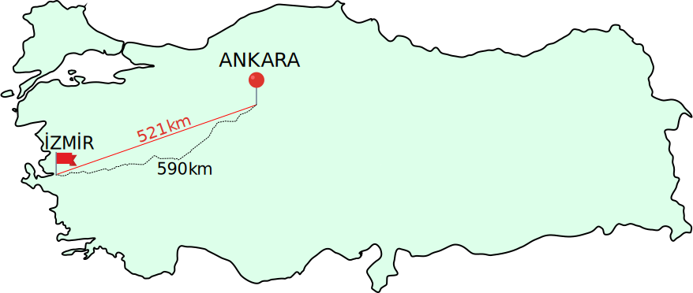

Bir Boyutlu Hareket
Yer Değiştirme
• Yer değiştirme, vektörel bir büyüklüktür
• Bir cismin başlangıç konumundan son konumuna doğru olan en kısa doğrusal mesafedir.
• Fizikte değişimi belirtmek için \(\Delta\) sembolü kullanılır.Buna göre
\(\Delta x = x_s - x_i\)

Bayrak ve konumu baş, bitiş e koy ve animasyonla s ye bastıgında yukarı doğru fırlayıp çıksın
Alınan Yol: 0 metre
Yer Değiştirme: 0 metre
Hız
• Bir cismin birim zamanda aldığı yol olarak tanımlanır
• Vektörel bir büyüklüktürSürat
• Hız kavramıyla çok karıştırılan sürat yönsüzdür(skaler), yalnızca büyüklük ifade eder.